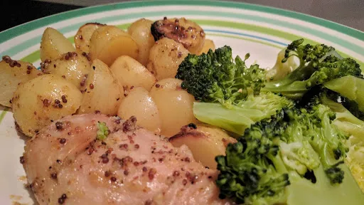

Glazed lemon-pepper chicken
15 mins
Serves 4

Ingredients
- 4 boneless skinless chicken breasts
- 4 tbsp clear honey
- , finely grated zest and juice of 1 lemon
- 2 cloves garlic, crushed
- 1 tbsp Dijon mustard
- 2 tsp ground black pepper
- 750 g baby salad potatoes, halved
- steamed broccoli florets, to serve
Instructions
- Slash each
chicken breasts4
two or three times with a sharp knife. In a shallow dish mix the honey, lemon zest and juice, garlic2 cloves
, mustard1 tbsp
and black pepper2 tsp
for the marinade.
- Add the chicken to the marinade and turn to coat. Leave to marinate for 30 minutes or prefereably overnight.
- Heat the oven to 220°C/Gas 7. Arrange the
potatoes750 g
and chicken in a single layer in a shallow-sided roatingg tin and pour any excess marinade on top. Roast until the potatoes750 g
are tender and the chicken is cooked, about 25-30 minutes. Serve with the steamed potatoes750 g
and any pan juices.
-
kcal
339
-
fat
3 g
-
saturates
1 g
-
carbs
44 g
-
sugar
11 g
-
fibre
2 g
-
protein
38 g
-
salt
0.55 g
BBC Good Food: Low-fat Feasts
Short Link
Long Link